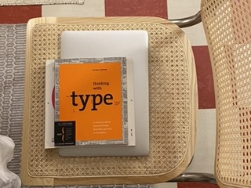
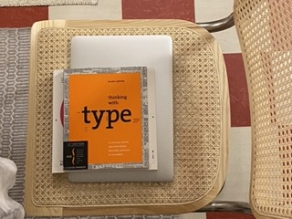

Digital Journal - Ida Bolinder
Welcome! I'm Ida Bolinder 🪐
I'm a student at Jönköping University, where I'm studying graphic design and web development. I have a deep passion for creating visually engaging and functional designs that enhance user experiences. Whether it's crafting beautiful interfaces or developing intuitive websites, I love blending creativity with technology to bring ideas to life.
Beyond my studies, I enjoy capturing the world through my camera, focusing on nature and animal photography. Being outdoors inspires me, and I find joy in exploring new perspectives through the lens. When I'm not designing or taking photos, you'll often find me horseback riding, skiing, or at the gym as staying active is an important part of my life and fuels my creativity.
This website is a space where I showcase my work, projects, and passions. Feel free to explore, and don't hesitate to click the contact page to reach out if you'd like to connect!